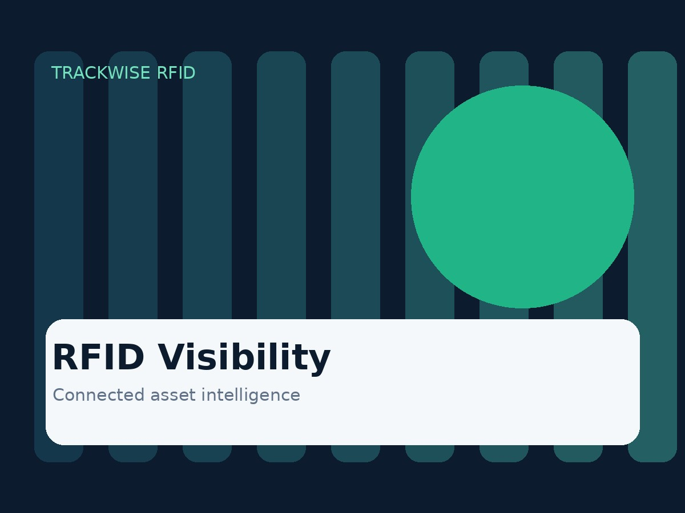

Improve Operational Visibility
Know what you have, where it is, and how it moves through your operation.
Improve visibility, automate operations, and make better decisions with reliable RFID solutions.

Turn physical movement into useful operational data without adding complexity to everyday workflows.
Know what you have, where it is, and how it moves through your operation.
Reduce manual scanning and data entry with connected RFID workflows.
Use timely asset information to improve planning, accountability, and service.
Flexible RFID workflows designed around the assets and processes that matter most.
Automate stock counts, improve accuracy, and create a clearer view of inventory movement.
Explore inventory →Know where critical tools and equipment are while strengthening accountability.
Explore tool tracking →Connect readers, tags, and deployment workflows for reliable asset identification.
Explore hardware →RFID can capture inventory events quickly and consistently, helping teams spend less time on manual counts and more time acting on accurate information.
Track tagged tools and equipment across teams, work areas, and handoffs to reduce search time and strengthen responsibility.
Choose fixed, handheld, or portal-based reader setups according to the environment, range, throughput, and workflow you need to support.
Tell us what you need to track and we'll help map the right RFID workflow.